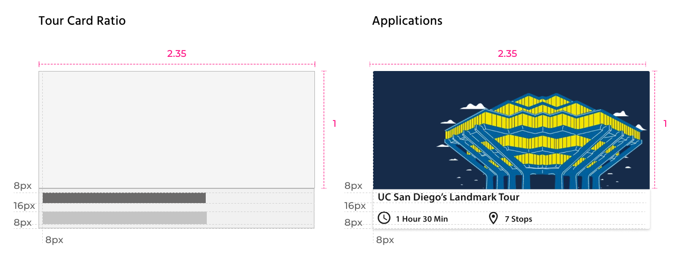
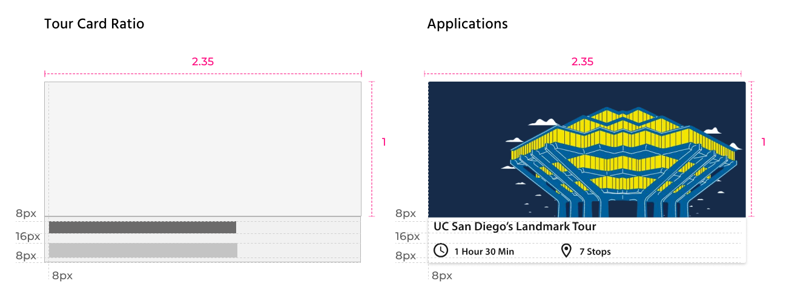
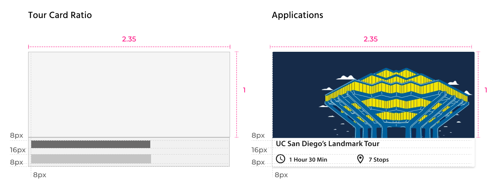

3 Months after the MVP fully shipped, this app has was acquired by a local start-up company at San Diego called PrecisePK. It felt surreal seeing my creation, something I made from 0 to 1, getting endorsed by investors!
Me and my computer science major friends decided to build something to practice our skills, and this problem was what we chose to tackle. As the designer on the team, I needed to break down this problem statement into specific parts that are easier to solve collaboratively with the team.
Breaking It Down
Through surveying and interviewing the visitors to UC San Diego, we first categorized our users into three types of personas:
Currently, most visitors to our campus choose to go on our school’s official Triton Tour. By interviewing the Triton Tour leaders and actually going on the tours, we discovered 4 core problems underlying the current touring experience.
Which Type of Traveller Are You?
Besides researching on the school tour, I discovered an interesting pattern from surveying and interviewing tourists at the school:
When touring or traveling in general, people tend to fit into one of these two states:
The Forager
- Would plan out trip in advance
- Always has a specific destination in mind during the trip
- In this state, people have strong interest towards a specific place
The Wanderer
- Likes to wander around, no plans made & no specific destination in mind
- In this state, people are more likely to consider recommendations.
Moreover, Instead of a fixed point, a natural, fruitful exploring experience stems from a dialectical relationship between the foraging state and the wanderer state. During a tour, the user’s mindset is constantly shifting between the a Forager and a Wanderer.
Information Architecture
To reflect the dynamic between Forager and Wanderer in our user experience, we created a lot of entry points for the Place Detail Page - a stop of a tour in our app. This design of the user flow makes it easy for users to begin going to places as soon as they see something interested in mind.
Design Iterations
On the Place Detail Page, a lot of information is crammed onto a single, scrollable interface. We need to lay out the information in the best way so that users absorb the information without being overwhelmed.
Therefore, we came up with three versions of the interfaces, and conducted a preference test with five users to gather their preferences on these variations.
Design System
For this app is a touring app for UC San Diego, we decided to keep our color palette consistent with our school’s official color palette. However, we slightly modified the palette to make it more vibrant and welcoming.
This color palette was applied to every visual element of the app, from the onboarding splash pages to the icons and logos.
Responsiveness
I was working with a team of developers on this project. To make my designs responsive to different screen sizes and make life easier for my developers, I created a few guidelines for grid and important UI elements.

Usability Testing
To make sure the color choices in our app are accessible to all kinds of UC San Diego’s visitors, I carefully evaluated the color contrast of our UIs against the accessibility standards by WCAG. Also, since a lot of the use cases are under sunlight, I tested our prototypes under stimulations of strong sunlight.
One of the major changes made from our testing was changing the colors of the primary button. The new pairing of text and button background:
Final Prototypes
Start Your Journey Anywhere The three main pages for our app are the "Xplore" Home Page, the "Tours" Page, and the "Places" Page. The "Xplore" Page shows the places near your current location and modularized combinations of places and preset tours. The "Tours" Page consists the customization feature plus many preset tours under different topics. The "Places" page contains all places on campus and a search bar.
Customizing Your Own Tour Besides preset tours, users can also customize their tour of interests. The simple customization process makes it the key of a personalized touring experience that our app can provide.
Stop-by-Stop Touring Experience When users hop on tours, they will see a preview of their next stop. When they are on their way to the next stop, they can read through the place detail page and familiarize themselves with the place. After they arrive, they can listen to the audio guide while freeing their eyes focused on the scenes in front of them. :)
Monetization Ideas
For this project, we designed our app as a touring app for UC San Diego. But, is there a way for us to scale this project as a business? After discussing with our PM, Shaotao, we came up with potential ways to scale this app as a business.
Our business model is a subscription-service for campuses, parks, and other landmarks. They will provide us with subscription fees and content, while we provide them a platform for their tourists.
Things I Learned
Sometimes being a Product Designer, you have to work under multiple constraints. Different stakeholders on the team might view the product from different perspectives. In order to convince the developers to implement my designs, I learned how to prioritize the values that my designs will bring to our users and to the product itself. In the cases where “usefulness” and “aesthetics” cannot be achieved at the same time, usefulness always wins.


 To reflect the dynamic between Forager and Wanderer in our user experience, we created a lot of entry points for the Place Detail Page - a stop of a tour in our app. This design of the user flow makes it easy for users to begin going to places as soon as they see something interested in mind.
To reflect the dynamic between Forager and Wanderer in our user experience, we created a lot of entry points for the Place Detail Page - a stop of a tour in our app. This design of the user flow makes it easy for users to begin going to places as soon as they see something interested in mind. 

.png) 
